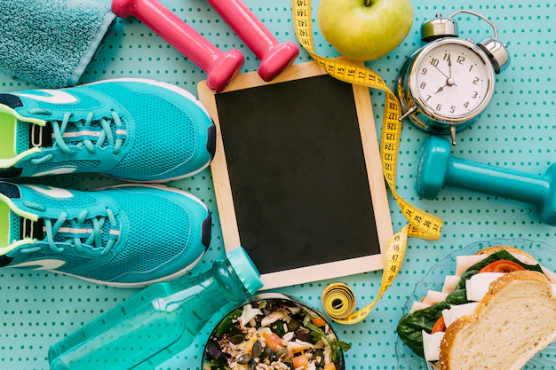

<div id="carouselExampleInterval" class="carousel slide" data-bs-ride="carousel">

 <div class="carousel-inner">

   <div class="carousel-item active" data-bs-interval="6000">
     
     <div class="carousel-caption d-none d-md-block">
       <h5 class="font">Find credible fitness and health information</h5>
       <h4 class="font1">Maintain good health and live healthy life style!!</h4>
     </div>
   </div>

   <div class="carousel-item" data-bs-interval="6000">
     
   </div>
   <div class="carousel-item" data-bs-interval="6000">
     
   </div>

 </div>
 
   <button class="carousel-control-prev" type="button" data-bs-target="#carouselExampleInterval" data-bs-slide="prev">
   <span class="carousel-control-prev-icon" aria-hidden="true"></span>
   <span class="visually-hidden">Previous</span>
   </button>
   <button class="carousel-control-next" type="button" data-bs-target="#carouselExampleInterval" data-bs-slide="next">
   <span class="carousel-control-next-icon" aria-hidden="true"></span>
   <span class="visually-hidden">Next</span>
   </button>
</div>

